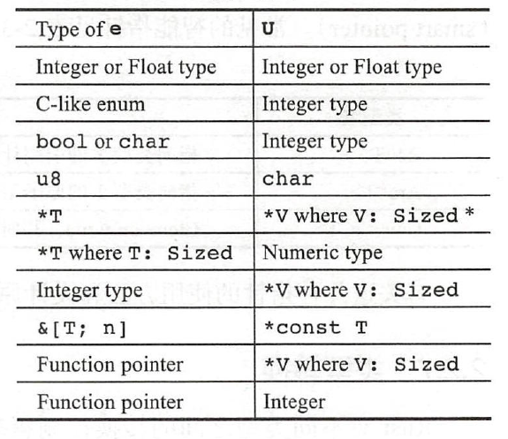

类型于20世纪50年代被FORTRAN语言引入，发展到今日，类型已经成为了各大编程语言的核心基础，Rust也不例外。所谓类型，就是对表示信息的值进行的细粒度的区分，比如整数、小数、文本等。不同的类型占用的内存不同，与直接操作比特位相比，直接操作类型可以更安全更有效地利用内存 。
Rust是一个强显式静态类型的语言。下面解释一下何为“强显式静态类型”：
- 在编译期进行类型检查的语言属于静态类型，在运行期进行类型检查的语言属于动态类型。
- 不允许类型的自动隐式转换的语言属于强类型，反之则是弱类型。
- 在静态类型语言中，依靠编译器自动推导类型而不需要显式指定类型的语言属于显式静态类型，反之则是隐式。Rust的编译器具有自动推导类型的能力，但还不够强大，在很多地方仍需要显式指定类型，类型仍然是Rust语法的一部分。
Rust中一切皆表达式，表达式皆有值，值皆有类型，因此，Rust中一切皆类型。Rust中包含基本的原生类型和复合类型，也包含线程崩溃等无返回值的never类型。Rust类型系统吸收百家之长，基本囊括了编程中会遇到的各种情况，一般不会有未定义的行为出现，所以说，Rust是类型安全的语言。
基本数据类型
布尔类型
Rust内置了布尔类型，类型名为bool，它有两个值：true和false。示例如下：
let x = true; // 不显示声明类型，自动推断x为bool类型
let y: bool = !x; // 取反运算
println!("{}", y);
let z = x && y; // 逻辑与，带短路功能
println!("{}", z);
let z = x || y; // 逻辑或，带短路功能
println!("{}", z);
let z = x & y; // 按位与
println!("{}", z);
let z = x | y; // 按位或
println!("{}", z);
let z = x ^ y; // 按位异或
println!("{}", z);
使用布尔值的主要场景是条件表达式，但注意，Rust并不支持将数字转换为bool类型。
let x = 1;
if x {} // error[E0308]: mismatched types, expected `bool`, found integer
字符类型
字符类型由char表示，用单引号定义，代表一个unicode标量值。由于char类型的设计目的是描述任意一个unicode字符，所以它占据的空间不是1个字节，而是4个字节。
let a = 'a';
println!("{}", a);
let heart_eyed_cat = '😻';
println!("{}", heart_eyed_cat);
整数类型
Rust中，各种整数类型之间的主要区分特征是：有符号/无符号，占据空间大小。
| 长度 | 有符号 | 无符号 |
|---|---|---|
| 8-bit | i8 |
u8 |
| 16-bit | i16 |
u16 |
| 32-bit | i32 |
u32 |
| 64-bit | i64 |
u64 |
| 128-bit | i128 |
u128 |
| arch | isize |
usize |
有无符号代表数字能否为负值：
- 有符号：每一个有符号的类型的表达范围为 [$-2^{n-1}$, $2^{n-1} - 1$]，其中n为类型的长度。
- 无符号：每一个无符号的类型的表达范围为 [0, $2^n - 1$]，其中n为类型的长度。
另外，isize和usize依赖于运行程序的计算机架构：64 位架构上它们是 64 位的， 32 位架构上它们是 32 位的。其他一些琐碎的知识点一并体现在下面的代码注释中：
// 若编译器无法推断变量的具体类型，则自动默认为i32类型
let var = 32;
// 以0x开头代表十六进制表示
let var = 0xFF;
// 以0o开头代表八进制表示
let var = 0o55;
// 以0b开头代表二进制表示
let var = 0b1001;
// 可在数字字面量中任意地方添加下划线，以方便阅读
let var = 0x_1234_ABCD;
// 字面量后面可以添加后缀，以标明具体类型
let var = 32u8;
Rust的数字表达策略和C语言不同，C语言标准中对许多类型的大小并没有做强制规定，比如int类型在不同平台上可能是不同的大小，这给程序员带来了许多不必要的麻烦。相反，Rust在语言标准中规定好各个类型的大小，让编译器针对不同平台做适配，生成不同的代码，是更合理的选择。
整数运算中有一个让人头疼的问题是“溢出”。在C语言中，对于无符号类型，如果超过表示范围，则自动舍弃高位数据；对于有符号类型，如果超过表示范围，C标准规定这是未定义行为，这就是说编译器随便怎么处理都可以。未定义行为有利于编译器做一些更激进的性能优化，但这容易在极端场景下产生诡异的bug。
Rust的设计思路更倾向于预防bug，而不是无条件地压榨效率，Rust设计者希望尽可能减少整数溢出这种未定义行为。Rust的处理方式如下：
- debug模式：编译器会自动插入整数溢出检查，一旦发生溢出，则会引发panic（一种崩溃机制，暂且不表）;
- release模式：不检查整数溢出，而是采用自动舍弃高位的方式。
浮点类型
Rust提供了基于IEEE 754标准的浮点类型，按占据空间大小区分，分别为f32和f64，其使用方法与整型差别不大。如果不加后缀或没有指定类型，Rust会默认推断浮点数为f64类型，因为在现代CPU中，它与f32速度几乎一样，且精度还更高。
f32：数值范围为[$-3.4\times 10^{38}$, $3.4\times 10^{38}$]f64：数值范围为[$-1.8\times 10^{308}$, $1.8\times 10^{308}$]
浮点类型相对于整数类型的麻烦之处在于：它不仅可以表达正常的数值，还可以表达不正常的数值。参见下面的代码：
let x = 1.0 / 0.0;
let y = 0.0 / 0.0;
println!("x is {}, y is {}", x, y);
上面代码的输出结果为x is inf, y is NaN，inf代表无穷大（infinite），NaN代表不是数字（Not a Number）。在标准库中，有一个std::num::FpCategory枚举类，表示了浮点数可能的状态：
enum FpCategory {
// "Not a Number", often obtained by dividing by zero.
Nan,
// Positive or negative infinity.
Infinite,
// Positive or negative zero.
Zero,
// De-normalized floating point representation (less precise than `Normal`).
Subnormal,
// A regular floating point number.
Normal,
}
原生指针
我们一般将表示内存地址的类型称为指针。例如之前学习过的引用，它本质上就是一种非空指针，编译器会对引用进行借用检查，以保证内存安全和类型安全。原生指针主要用于unsafe代码块中，直接使用原生指针是不安全的，因为其可能为null，所以需要程序员自己保证安全。unsafe距离我们还很遥远，所以原生指针相关的只是暂且不表。
数组类型
数组是Rust内建的原始集合类型 ，数组的类型签名是[T:N]，其中T代表数组中元素的类型，N代表数组的长度，N为编译期常量，必须在编译时确定其值。对于两个数组类型，只有元素类型和元素个数都完全相同，这两个数组才是同类型的，才可以互相赋值。数组的特点为：
- 数组大小固定
- 元素均为同类型
- 默认不可变
Rust 中，数组中的值位于中括号内的逗号分隔的列表中。下面代码中定义了类型为[i32; 3]的数组，该数组是固定长度的，不允许对其添加或删除元素。即使通过let mut关键字定义，也只能修改已存在于索引位上的元素。
let mut arr: [i32; 3] = [1, 2, 3];
println!("{:?}", arr); // 输出[1, 2, 3]
arr[0] = 4;
println!("{:?}", arr); // 输出[4, 2, 3]
如果希望创建一个每个元素都相同的数组，可以在中括号内指定其初始值，后跟分号，再后跟数组的长度，如下所示：
let arr = [3; 5];
println!("{:?}", arr); // 输出[3, 3, 3, 3, 3]
Rust会在编译期尽可能地检查数组索引是否小于数组的长度，如果发现问题，会报编译错误：
let arr = [3; 5];
println!("{}", arr[5]); // error: index out of bounds
但静态分析的能力有限，数组越界错误不能够全部在编译期查出来，Rust会在运行时继续检查索引是否小于数组的长度，如果超出，则会panic。
一般情况下，Rust不鼓励大量使用索引操作，因为索引操作都会执行一次边界检查，所以其效率会比不执行边界检查的C/C++略低，更推荐的做法是使用迭代器。
范围类型
Rust内置了范围（Range）类型，包括左闭右开和全闭两种区间，语法为begin..end。1..5表示左闭右开区间，它是std::ops::Range的实例；1..=5表示全闭区间，它是std::ops::RangeInclusive的实例。每个Range都是一个迭代器，可以直接使用for循环进行打印：
for x in 1..5 {
println!("{}", x);
}
切片类型
切片类型（Slice）是对一个数组的引用片段，切片代表一个指向数组起始位置的指针和数组长度。切片有利于安全有效地访问数组的一部分，因为切片引用的是已经存在的变量。使用引用操作符&对数组进行引用，就产生了一个切片，也可以结合范围类型对数组进行切割：
let arr = [1, 2, 3, 4, 5];
let slice = &arr;
println!("{:?}", slice); // 输出：[1, 2, 3, 4, 5]
let slice = &arr[2..4];
println!("{:?}", slice); // 输出：[3, 4]
对于数组[T;N]，其借用指针的类型是&[T;N]，但其切片的类型是&[T]。&[T;N]占用的空间大小和普通引用相同，而&[T]占用的空间大小是普通引用的两倍：
println!("&i32 size is {}", std::mem::size_of::<&i32>()); // 输出：&i32 size is 8
println!("&[i32; 3] size is {}", std::mem::size_of::<&[i32; 3]>()); // 输出：&[i32; 3] size is 8
println!("&[i32] size is {}", std::mem::size_of::<&[i32]>()); // 输出：&[i32] size is 16
可以看到，数组切片的大小的确是普通引用的两倍，因为数组切片不止包含一个指向数组的指针，切片本身还含带长度信息。因此，切片还有一个非常形象的名字：胖指针（fat pointer）。胖指针的设计，避免了数组类型作为参数传递时自动退化为裸指针类型，丢失了长度信息的问题，保证了类型安全。
字符串类型
出于内存安全的考虑，Rust提供了两种字符串类型：一种是固定长度字符串，不可以随便更改其长度，就是str字符串；另一种是可增长字符串，可以随便改变其长度，就是String字符串。
说到str，就不得不提到一个概念，动态大小类型（Dynamic Sized Type，DST），是指在编译阶段无法确定占用空间大小的类型。为了安全，指向DST的指针一般是胖指针。str就是DST类型，我们不能在栈上声明一个不定长大小的变量示例，也不能用它作为函数的参数和返回值。但是，&str的大小是确定的，因此，&str类型可以用作变量实例、函数参数和返回值。&str又被称作字符串切片类型，平时对字符串常量的绑定也是获得的其切片：
let name: &str = "jack";
println!("{}", name); // 输出：jack
Rust的字符串内部默认使用utf-8编码格式，而内置的char类型是4字节的unicode，所以Rust里面的字符串不能视为char类型的数组，而更接近u8类型的数组。这样设计的缺点是不能支持O(1)复杂度的索引操作，它的复杂度是O(n)，因为utf-8是变长编码，如果不从头开始过一遍，根本不知道第n个字符的地址在什么地方。
never类型
Rust提供了一种特殊数据类型，never类型，用!表示，代表永远不可能有返回值的计算类型，比如线程退出的时候，就不可能有返回值。Rust是一个类型安全的语言，所以也需要将这种情况纳入类型系统中进行统一管理。见下面的代码：
let num = Some(42);
let num = match num {
Some(num) => num,
None => panic!("Nothing!"),
};
println!("{}", num); // 输出：42
上面的代码中使用了一种当下还没学到的语法，不过不必在意，只需知道match表达式要求所有的分支都必须返回相同的类型，而num是i32类型，panic!宏会返回!类型，但这里没有报错，是因为never类型是可以强制转换为其他任何类型的。
类型转换
为了防止隐藏的bug，Rust希望类型转换时要显式地标记出来，类型转换使用关键字as。
let a: i8 = 10;
let b: i16 = a; // error[E0308]: mismatched types
let b: i16 = a as i16; // 正确写法
注意，as关键字也不是随便可以用的，它只允许编译器认为合理的类型转换。对于表达式e as U，下图中是所允许的类型转换。

复合数据类型
Rust提供了3种常用的复合数据类型，且都是异构数据类型，即可以使用它们将多种类型构建为统一的数据类型：
- 元组（Tuple）
- 结构体（Struct）
- 枚举体（Enum）
tuple
tuple指的是“元组”类型，它通过圆括号包含一组表达式构成，tuple内的元素没有名字，tuple是把几个类型组合到一起的最简单的方式。访问tuple内部元素可以通过模式匹配或者数字索引。示例如下：
let p = (10, false);
let q = (0,); // 只有一个元素的元组要加一个逗号以区分表达式和元组
let (a, b) = p; // 模式匹配访问元组元素
println!("{}, {}", a, b);
println!("{}, {}", p.0, p.1); // 数字索引访问元组元素
元组内部也可以一个元素都没有，称为unit，占用0内存空间。
println!("{}", std::mem::size_of::<()>()); // 输出：0
struct
struct和tuple的区别是它的每个元素都有自己的名字，每个元素之间采用逗号分开，类型依旧跟在冒号后面，但必须显示指定不能省略：
struct Point {
x: i32,
y: i32
}
struct类型的初始化使用成员-冒号-值的方式，如果有局部变量名字恰好和成员名字一致，则可以省略成员名字：
let p = Point{x: 0, y: 0};
let x = 10;
let y = 10;
let p = Point{x, y};
访问结构体内部的元素使用“点”加变量名的方式，也可以使用模式匹配。
tuple struct
tuple本身和其元素都没有名字，struct本身和其元素都有名字，tuple struct本身有名字，但其元素没有名字：
struct Color(i32, i32, i32);
tuple struct有一个特殊的用法，即当它只包含一个元素的时候，就是所谓的newtype idiom，可以让我们很方便地在一个类型的基础上创建一个新的类型。
enum
与C/C++中的枚举相比，Rust中的enum要强大得多，它可以为每个成员指定附属的类型信息。例如：
enum Number {
Int(i32),
Float(f32),
}
enum中每个元素可以像空结构体一样，不指定它的类型；也可以像tuple struct一样，用圆括号加无名成员；还可以像正常结构体一样，用大括号加带名字的成员。
Rust标准库中有一个极其常用的enum类型Option<T>，它的定义如下：
enum Option<T> {
None,
Some(T),
}
其中T代表的是类型，这是一种泛型的写法。Option<T>的含义是“要么存在，要么不存在”，可以有效提升程序的健壮性。
参考文献
- 《Rust编程之道》张汉东
- 《深入浅出Rust》范长春